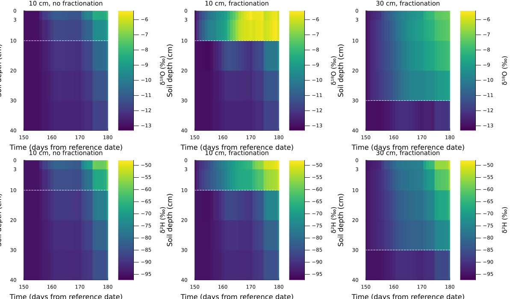

Example Script 02
This example was generated 2026-09-28
Soil evaporation depth and isotope fractionation
Compare a 10 cm evaporation source zone without fractionation, the same zone with Craig–Gordon fractionation, and a 30 cm zone with fractionation. Comparing cases 1 and 2 isolates fractionation; comparing cases 2 and 3 isolates the source depth. See Soil evaporation depth and isotope fractionation for the settings and assumptions. SLVPDEPTH_m defaults to 0.0 (the uppermost input layer), and soil evaporation fractionation defaults to false.
Load the common inputs
Use the bundled Davos data and a common grid with 3 cm and 7 cm surface layers, followed by 10 cm layers. This resolves both the 10 cm and 30 cm source zones. The input path is independent of the working directory.
using LWFBrook90
using Plots
input_path = normpath(joinpath(dirname(pathof(LWFBrook90)), "..", "examples", "DAV2020-full"))
model = loadSPAC(input_path, "DAV2020-full";
simulate_isotopes = true,
simulate_evaporation_fractionation = false,
Δz_thickness_m = [0.03, 0.07, fill(0.10, 10)...],
root_distribution = (beta = 0.97, z_rootMax_m = -0.5),
IC_soil = (PSIM_init_kPa = -6.3,
delta18O_init_permil = -13.0, delta2H_init_permil = -95.0))SPAC model:
===== DATES:===============
===== METEO FORCING:===============
GLOBRAD (MJ/m2/day): avg: 13.90, range: 1.04 to 32.40
PREC (mm/day): avg: 2.61, range: 0.00 to 35.40
IRRIG (mm/day): avg: 0.00, range: 0.00 to 0.00
TMAX (°C): avg: 9.00, range: -8.90 to 26.60
TMIN (°C): avg: -0.79, range: -18.80 to 12.90
VAPPRES (kPa): avg: 0.64, range: 0.11 to 1.37
WIND (m/s): avg: 2.59, range: 0.70 to 4.90
δ18O (‰): avg: -13.26, range: -22.60 to -6.87
δ2H (‰): avg: -95.98, range:-171.53 to -44.68
===== CANOPY EVOLUTION:===============
model.pars.canopy_evolution was loaded from meteoveg.csv
===== INITIAL CONDITIONS:===============
Soil IC: (PSIM_init_kPa = -6.3, delta18O_init_permil = -13.0, delta2H_init_permil = -95.0)
Scalar IC: 3×6 DataFrame
Row │ u_GWAT_init_mm u_INTS_init_mm u_INTR_init_mm u_SNOW_init_mm u_CC_in ⋯
│ Float64 Float64 Float64 Float64 Float64 ⋯
─────┼──────────────────────────────────────────────────────────────────────────
1 │ 1.0 0.0 0.0 0.0 ⋯
2 │ -13.0 -13.0 -13.0 -13.0
3 │ -95.0 -95.0 -95.0 -95.0
2 columns omitted
===== MODEL PARAMETRIZATION:===============
VXYLEM_mm => 20.0 | RHOTP => 2.0 | TH => 40.0 |
DISPERSIVITY_mm => 40.0 | NN => 2.5 | MXKPL => 15.6 |
LAT_DEG => 47.0 | FRINTLAI => 0.1 | MXRTLN => 3000.0 |
ESLOPE_DEG => 0.0 | FSINTLAI => 0.0 | INITRLEN => 12.0 |
ASPECT_DEG => 0.0 | FRINTSAI => 0.1 | INITRDEP => 0.2 |
ALB => 0.2 | FSINTSAI => 0.0 | RGRORATE => 0.0 |
ALBSN => 0.5 | CINTRL => 0.1 | RGROPER => 30.0 |
C1 => 0.2 | CINTRS => 0.1 | FXYLEM => 0.5 |
C2 => 0.5 | CINTSL => 0.6 | PSICR => -1.0 |
C3 => 0.2 | CINTSS => 0.6 | RTRAD => 0.3 |
WNDRAT => 0.3 | RSTEMP => -0.5 | NOOUTF => 1.0 |
FETCH => 5000.0 | MELFAC => 1.5 | IDEPTH_m => 0.4 |
Z0W => 0.0 | CCFAC => 0.3 | QDEPTH_m => 0.0 |
ZW => 2.0 | LAIMLT => 0.2 | SLVPDEPTH_m => 0.0 |
MAXLAI => 3.0 | SAIMLT => 0.5 | RSSA => 795.3 |
DENSEF_baseline_ => 1.0 | GRDMLT => 0.3 | RSSB => 1.0 |
SAI_baseline_ => 1.0 | MAXLQF => 0.1 | INFEXP => 0.5 |
AGE_baseline_yrs => 100.0 | KSNVP => 0.3 | BYPAR => 0.0 |
HEIGHT_baseline_m => 25.0 | SNODEN => 0.3 | QFPAR => 1.0 |
LWIDTH => 0.1 | GLMAX => 0.0 | QFFC => 0.0 |
Z0G => 0.0 | GLMIN => 0.0 | IMPERV => 0.0 |
Z0S => 0.0 | CR => 0.5 | DSLOPE => 0.0 |
LPC => 4.0 | RM => 1000.0 | LENGTH_SLOPE => 200.0 |
CZS => 0.1 | R5 => 287.0 | DRAIN => 0.5 |
CZR => 0.1 | CVPD => 2.0 | GSC => 0.0 |
HS => 1.0 | TL => 0.0 | GSP => 0.0 |
HR => 10.0 | T1 => 10.0 | |
ZMINH => 2.0 | T2 => 30.0 |
===== SOIL DOMAIN:===============
Root distribution: (beta = 0.97, z_rootMax_m = -0.5)
Soil layer properties: 3×3 DataFrame
Row │ Upper_m Lower_m shp
│ Float64 Float64 MualemVa…
─────┼─────────────────────────────────────────────────────────────────────────────────────────────────────
1 │ 0.0 -0.03 (θ from θr=0.000 to θs=0.379, Ks = 2854.9, STONEF=0.2, l=-3.3, n=1.2, α= 20.4)
2 │ -0.03 -0.4 (θ from θr=0.000 to θs=0.379, Ks = 2854.9, STONEF=0.4, l=-3.3, n=1.2, α= 20.4)
3 │ -0.4 -1.1 (θ from θr=0.000 to θs=0.379, Ks = 2854.9, STONEF=0.8, l=-3.3, n=1.2, α= 20.4)
Soil discretized into N=12 layers, Δz layers: (avg, min, max) = (0.092,0.030,0.100)m.
[-0.03, -0.1, -0.2, -0.3, -0.4, -0.5, -0.6, -0.7, -0.8, -0.9, -1.0, -1.1]
===== SOLVER OPTIONS:===============
(compute_intermediate_quantities = true, simulate_isotopes = true, simulate_irrigation = false, simulate_evaporation_fractionation = false, DTIMAX = 0.5, DSWMAX = 0.05, DPSIMAX = 0.0005)
Run three cases
Use a short summer period, in days relative to the model's reference date. Each case starts from the same prescribed initial state at day 150; this is a sensitivity exercise rather than a simulation spun up from the start of the year. Rainfall, transpiration, and soil-water transport remain active in all cases. remakeSPAC returns a simulation ready to run, and (SLVPDEPTH_m = depth,) supplies the parameter in meters. Fractionation is a solver option and requires isotope simulation to be enabled.
simulation_period = (150.0, 180.0)
saved_days = range(simulation_period...; step = 1.0)
time_edges_days = [first(saved_days) - 0.5; saved_days .+ 0.5]
cases = (
(label = "10 cm, no fractionation", depth_m = 0.10, fractionates = false),
(label = "10 cm, fractionation", depth_m = 0.10, fractionates = true),
(label = "30 cm, fractionation", depth_m = 0.30, fractionates = true),
)
simulations = map(cases) do case
simulation = remakeSPAC(model;
params = (SLVPDEPTH_m = case.depth_m,),
solver_options = (simulate_evaporation_fractionation = case.fractionates,),
requested_tspan = simulation_period)
simulate!(simulation; progress = false, save_everystep = false, saveat = saved_days)
simulation
end;┌ Warning: Requested time span doesn't start at 0. This is supported and correctly takes into account atmospheric forcing.
│ Note, however, that initial conditions are applied at 2021-05-31T00:00:00, i.e. at t=150.0.
└ @ LWFBrook90 ~/work/LWFBrook90.jl/LWFBrook90.jl/src/LWFBrook90.jl:393
┌ Warning: Overwriting tspan defined in SPAC (0.0, 365.0) with provided value of (150.0, 180.0)
└ @ LWFBrook90 ~/work/LWFBrook90.jl/LWFBrook90.jl/src/LWFBrook90.jl:543
┌ Info: Start of simulation at 2026-09-28T22:41:30.712.
└ Saving intermediate results (`saveat=`) between: (150.0, 180.0) days
runtime: 8.457810 seconds (10.51 M allocations: 573.461 MiB, 1.29% gc time, 99.60% compilation time)
[ Info: Time steps for solving: 729 (729 accepted out of 729 total)
[ Info: End of simulation at 2026-09-28T22:41:39.184.
┌ Warning: Requested time span doesn't start at 0. This is supported and correctly takes into account atmospheric forcing.
│ Note, however, that initial conditions are applied at 2021-05-31T00:00:00, i.e. at t=150.0.
└ @ LWFBrook90 ~/work/LWFBrook90.jl/LWFBrook90.jl/src/LWFBrook90.jl:393
┌ Warning: Overwriting tspan defined in SPAC (0.0, 365.0) with provided value of (150.0, 180.0)
└ @ LWFBrook90 ~/work/LWFBrook90.jl/LWFBrook90.jl/src/LWFBrook90.jl:543
┌ Info: Start of simulation at 2026-09-28T22:41:39.190.
└ Saving intermediate results (`saveat=`) between: (150.0, 180.0) days
runtime: 0.022638 seconds (6.97 k allocations: 1.679 MiB)
[ Info: Time steps for solving: 729 (729 accepted out of 729 total)
[ Info: End of simulation at 2026-09-28T22:41:39.213.
┌ Warning: Requested time span doesn't start at 0. This is supported and correctly takes into account atmospheric forcing.
│ Note, however, that initial conditions are applied at 2021-05-31T00:00:00, i.e. at t=150.0.
└ @ LWFBrook90 ~/work/LWFBrook90.jl/LWFBrook90.jl/src/LWFBrook90.jl:393
┌ Warning: Overwriting tspan defined in SPAC (0.0, 365.0) with provided value of (150.0, 180.0)
└ @ LWFBrook90 ~/work/LWFBrook90.jl/LWFBrook90.jl/src/LWFBrook90.jl:543
┌ Info: Start of simulation at 2026-09-28T22:41:39.214.
└ Saving intermediate results (`saveat=`) between: (150.0, 180.0) days
runtime: 0.022794 seconds (6.96 k allocations: 1.680 MiB)
[ Info: Time steps for solving: 727 (727 accepted out of 727 total)
[ Info: End of simulation at 2026-09-28T22:41:39.237.Extract soil isotope signatures
get_soil_ returns a DataFrame with isotope signatures in per mil (‰). Its requested depths are in millimeters, so 15, 65, 150, and 250 mm sample the centers of the four layers in the top 30 cm of this grid.
soil_isotopes = get_soil_([:d18O, :d2H], simulations[2];
depths_to_read_out_mm = [15, 65, 150, 250])
first(soil_isotopes, 5)| Row | time | d18O_permil_15mm | d18O_permil_65mm | d18O_permil_150mm | d18O_permil_250mm | d2H_permil_15mm | d2H_permil_65mm | d2H_permil_150mm | d2H_permil_250mm |
|---|---|---|---|---|---|---|---|---|---|
| Float64 | Float64 | Float64 | Float64 | Float64 | Float64 | Float64 | Float64 | Float64 | |
| 1 | 150.0 | -13.0 | -13.0 | -13.0 | -13.0 | -95.0 | -95.0 | -95.0 | -95.0 |
| 2 | 151.0 | -12.2686 | -12.0637 | -12.9963 | -12.9999 | -92.507 | -91.8011 | -94.9871 | -94.9997 |
| 3 | 152.0 | -11.6399 | -11.2996 | -13.0144 | -12.9999 | -90.4204 | -89.2622 | -95.0482 | -94.9995 |
| 4 | 153.0 | -11.2304 | -10.8526 | -13.0406 | -12.9994 | -89.0066 | -87.7089 | -95.1366 | -94.998 |
| 5 | 154.0 | -10.75 | -10.3376 | -13.0761 | -12.9984 | -87.4201 | -86.0138 | -95.2567 | -94.9945 |
Compare the soil profiles through time
Plot the top 40 cm to show the source zones and the soil immediately below them. Rows show δ¹⁸O and δ²H; columns show the three cases. All columns in each row share the same color limits. Explicit depth edges preserve the unequal layer thicknesses, and the dashed line marks the evaporation source depth.
isotope_heatmaps = Plots.Plot[]
for (isotope, isotope_label) in ((:d18O, "δ¹⁸O (‰)"), (:d2H, "δ²H (‰)"))
profiles = map(simulations) do simulation
[getproperty(u.SWATI, isotope)[layer]
for layer in eachindex(simulation.ODEProblem.p.p_soil.p_THICK),
u in simulation.ODESolution.u]
end
shared_clims = extrema(Iterators.flatten(profiles))
for (case, simulation, profile) in zip(cases, simulations, profiles)
depth_edges_cm = [0.0; cumsum(simulation.ODEProblem.p.p_soil.p_THICK) ./ 10]
panel = heatmap(time_edges_days, depth_edges_cm, profile;
title = case.label, titlefontsize = 10,
xlabel = "Time (days from reference date)", ylabel = "Soil depth (cm)",
yflip = true, ylims = (0.0, 40.0), yticks = [0, 3, 10, 20, 30, 40],
xlims = simulation_period, clims = shared_clims,
color = :viridis, colorbar_title = isotope_label)
hline!(panel, [100 * case.depth_m]; color = :white, linestyle = :dash, label = false)
push!(isotope_heatmaps, panel)
end
end
comparison_plot = plot(isotope_heatmaps...; layout = (2, 3), size = (1200, 700), link = :both)
During drying, the shallow fractionating case can enrich more rapidly near the surface, while the deeper case distributes enrichment over the top 30 cm. Here rainfall and mixing may interrupt that pattern. Compare the fractionating 10 cm case with its non-fractionating control before attributing a change to evaporation. Atmospheric vapor isotopes are inferred from equilibrium with precipitation; they are not independent measured forcing in this example.
# To save the comparison, uncomment this line:
# savefig(comparison_plot, "soil-evaporation-isotopes.png")This page was generated using Literate.jl.